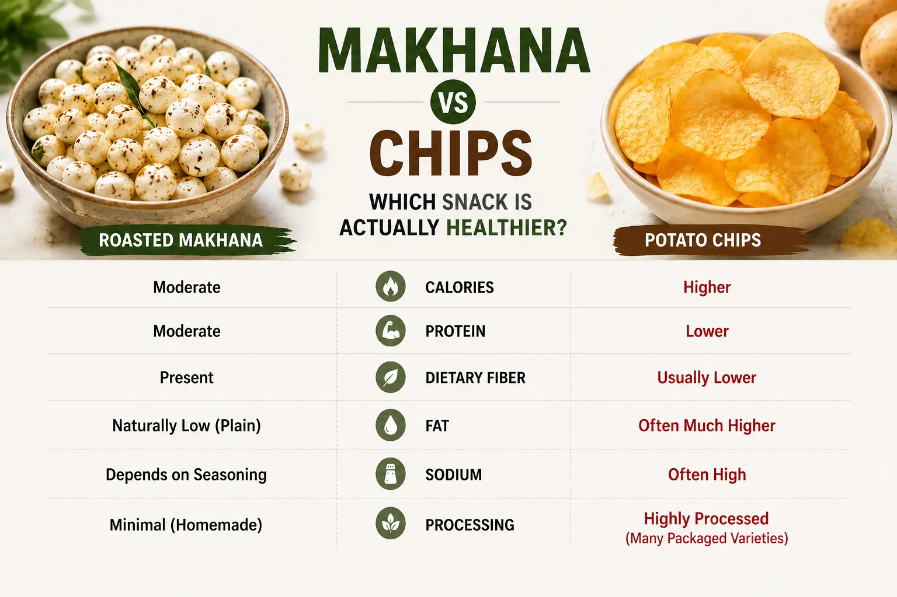
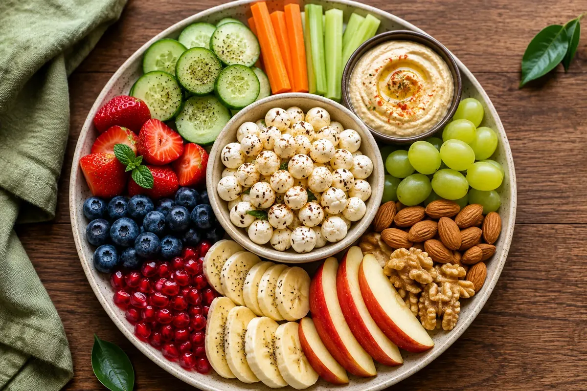

Introduction
Let's be honest—almost everyone has reached for a packet of chips while watching a movie, working late, or enjoying tea with friends. Chips are crispy, salty, and incredibly tempting. But there's one small problem: it's also easy to eat far more than you planned.
Now imagine another crunchy snack sitting beside those chips—a bowl of roasted makhana. Light, airy, and seasoned with your favorite spices, makhana has become a popular alternative for people looking to make healthier snack choices.
But is makhana actually healthier than chips, or is it just another food trend?
The answer isn't as simple as saying one food is "good" and the other is "bad." Both have their place, but they offer very different nutritional profiles. In this article, we'll compare makhana and potato chips side by side so you can decide which one better fits your lifestyle and health goals.
Why Do We Love Crunchy Snacks?
Crunchy snacks satisfy more than just hunger. The texture, flavor, and convenience make them enjoyable during work breaks, movie nights, travel, or evening cravings.
The challenge is that many packaged snacks contain high amounts of salt, refined oils, and calories, making them easy to overeat.
Choosing healthier snacks doesn't mean giving up crunch—it means finding options that better fit your overall eating pattern.
Makhana vs Chips: Nutrition Comparison

The exact nutrition depends on the brand and preparation method, but here's a general comparison.
Why Many People Choose Makhana
1. Naturally Low in Fat
Plain roasted makhana is naturally low in fat. If you roast it with only a small amount of oil or ghee, it remains a lighter snack compared with many fried chips.
2. More Filling
Makhana contains protein and dietary fiber, which can help you feel satisfied after eating. Feeling fuller may make it easier to avoid unnecessary snacking between meals.
3. Easy to Customize
One of the best things about makhana is how many flavors you can create at home.
Popular choices include:
Peri Peri
Garlic Herb
Chaat Masala
Tandoori
Cheese
Black Pepper
Mint
This variety makes it easier to enjoy healthy snacking without getting bored.
4. Less Greasy
Many potato chips are deep-fried, while homemade roasted makhana can be prepared with very little oil.
That doesn't automatically make every makhana product healthier—always check the ingredients and seasoning if you're buying packaged varieties.
When Chips Can Still Fit Into Your Diet
Let's be fair—chips aren't "forbidden."
If you enjoy chips occasionally, they can absolutely fit into a balanced diet.
The key is moderation.
A small portion enjoyed occasionally is very different from eating an entire large packet several times a week.
Healthy eating isn't about perfection. It's about your overall pattern of choices over time.
Which Snack Is Better for Weight Management?

If your goal is managing your weight, plain roasted makhana can be a smart option because it is:
Crunchy
Satisfying
Lower in fat than many fried snacks
Easy to portion
However, remember that portion size still matters. Even healthier snacks contribute calories, so enjoying them in moderation is important.
Homemade vs Packaged Snacks
Homemade roasted makhana gives you more control over:
Oil
Salt
Spices
Portion size
When buying packaged snacks—whether makhana or chips—take a quick look at the nutrition label. Some flavored products may contain higher amounts of sodium, added fats, or flavor enhancers.
Tips for Making Makhana More Delicious
Try these easy seasoning ideas:
Garlic & Herbs
Peri Peri
Black Pepper & Lemon
Chaat Masala
Tandoori Spice
Cinnamon & Cocoa (for a sweet twist)
Turmeric & Black Pepper
Using different seasonings keeps snack time interesting while allowing you to control the ingredients.
Frequently Asked Questions
Is makhana healthier than potato chips?
Plain roasted makhana is generally lower in fat and less processed than many fried potato chips. However, the overall healthiness depends on preparation, seasoning, and portion size.
Can makhana replace chips completely?
It can be an enjoyable alternative for many people, especially if you're looking for a lighter snack. That said, enjoying chips occasionally can still fit within a balanced diet.
Is flavored makhana healthy?
Homemade flavored makhana lets you control ingredients like oil and salt. Packaged flavored versions vary, so it's worth checking the nutrition label.
Which snack is better for kids?
Both can be enjoyed in moderation, but plain or lightly seasoned roasted makhana can be a nutritious snack option alongside a varied diet.
Final Verdict
If you're looking for an everyday crunchy snack, plain roasted makhana is often the more nutritious choice. It's naturally low in fat, easy to season at home, and can help satisfy cravings without relying on heavily fried snacks.
That doesn't mean chips need to disappear from your life. Enjoying them occasionally as part of a balanced diet is perfectly reasonable.
Healthy eating isn't about choosing one food forever—it's about making informed decisions most of the time. By swapping chips for roasted makhana now and then, you can enjoy the crunch you love while adding more variety to your snack choices.